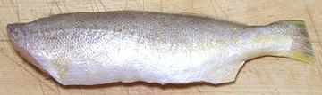

This fish is native to the West Atlantic from Venezuela to the northern half of Argentina. It can grow to nearly 18 inches, but the photo specimen was 14-1/2 inches long and weighed 1 pound 1-1/2 oz. Weakfish get their name from weakness of the mouth parts - hooks can tear loose and the fish then escapes. This fish is currently caught wild as a minor commercial fishery and is not farmed. IUCN Red List status LC (Least Concern).
More on Croakers and Drums.

This is a pretty decent eating fish. The flesh is off white with a good
medium flavor, but it can be a little firm with a slightly dry mouth
feel. The photo to the left shows a form currently available in markets
in Los Angeles, packed frozen in 2 pound bags. These were harvested and
pan dressed in Guyana, on the north coast of South America. They are nice
meaty fish - the only complaint I have is that cutting the fins so close
makes them more dificult to remove from a baked, steamed or poached fish.
There are some thread-like bones to deal with, but not a lot. The photo
specimen, 8-1/2 inches long and weighing 6 ounces, was purchased from
a large Asian market in Los Angeles (Alhambra) for 2016 US $3.50 /
pound in a 2 pound bag.
Cooking: Fillets can be pan fried skin-on or skin-off. Pan frying is my preferred method of cooking this fish, as its flavor is strong enough to work with that method. It's not a really good candidate for frying whole because the head is quite long. The flesh holds together well enough to be used in soups without much worry.
Moderate sized fish can be baked or steamed whole or pan dressed. Skin shrink shouldn't be much of a problem because it relaxes fairly quickly, but I'd still cut a few diagonal slashes through the skin for baking.
Buying: Though this fish is still not at all common in the Asian fish markets here in Los Angeles, the photo specimen was purchased from one at 2014 US $2.99 / pound.
Scales: This fish is covered with medium size scales that scrape off very easily with little flying around.
Cleaning: No particular problems here, but the gills are quite hard to pull - you'll want to use your long nose pliers.
Fillet: This fish is fairly easy to fillet, except there's nothing to guide you between the ends of the fin rays and just before the backbone. Be careful you come down on the right side of the bones. When you get to the ribcage, cut the ribs away from the backbone and pull them from the fillet with long nose pliers. They are long and very thin, but don't pose too much of a breakage problem.
Yield: A 1 pound 1-1/2 ounce fish yielded 8-1/2 ounces of skin-on fillets (49%). Skin off it was 7.48 ounces (43%).
Skin: Skin shrink is fairly severe but does relax. Pan frying with the skin works well if you start with the skin side up. If you poach a skin-on fillet it will curl into a cylinder, then relax. By time it's done, you can place it flat on the plate. The skin of this fish is definitely stronger in flavor than the flesh. You can skin this fish by the usual long knife and cutting board Method, but the skin is quite weak and you'll probably end up with skin left on the skirt. This can be worked off with a razor sharp filleting knife.
Stock: Head fins and bones make a stock that has a moderately strong flavor that I don't really care for. If you do make stock from it, do not include skins. It will have very little oil, but you should still remove what oil there is using your gravy separator. For details see our recipe Making Fish Stock.
sf_weakkngz 141010 - www.clovegarden.com